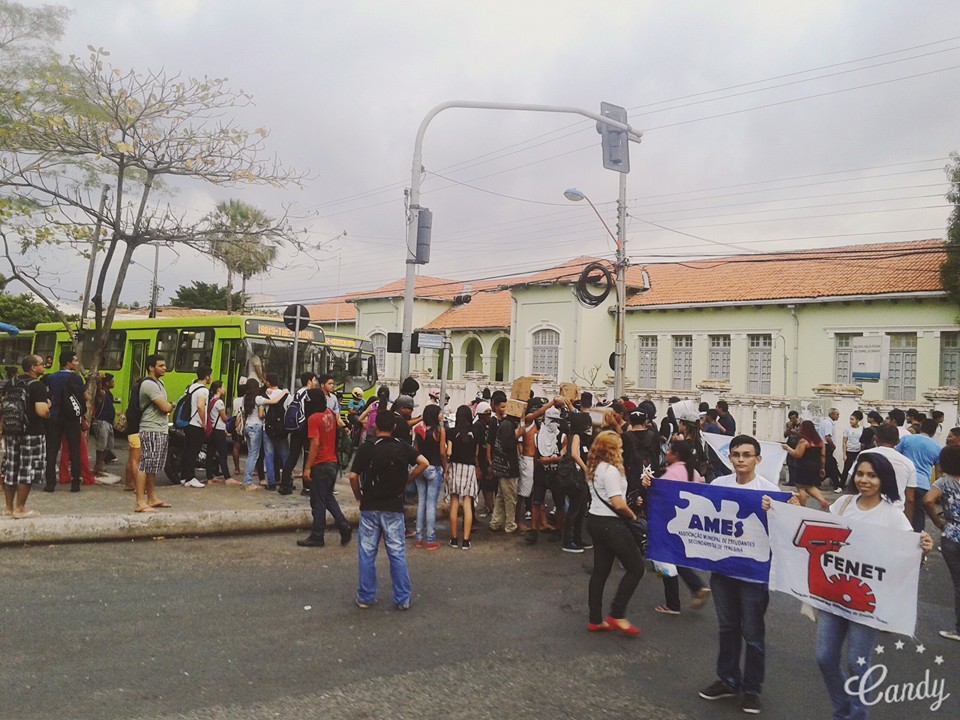
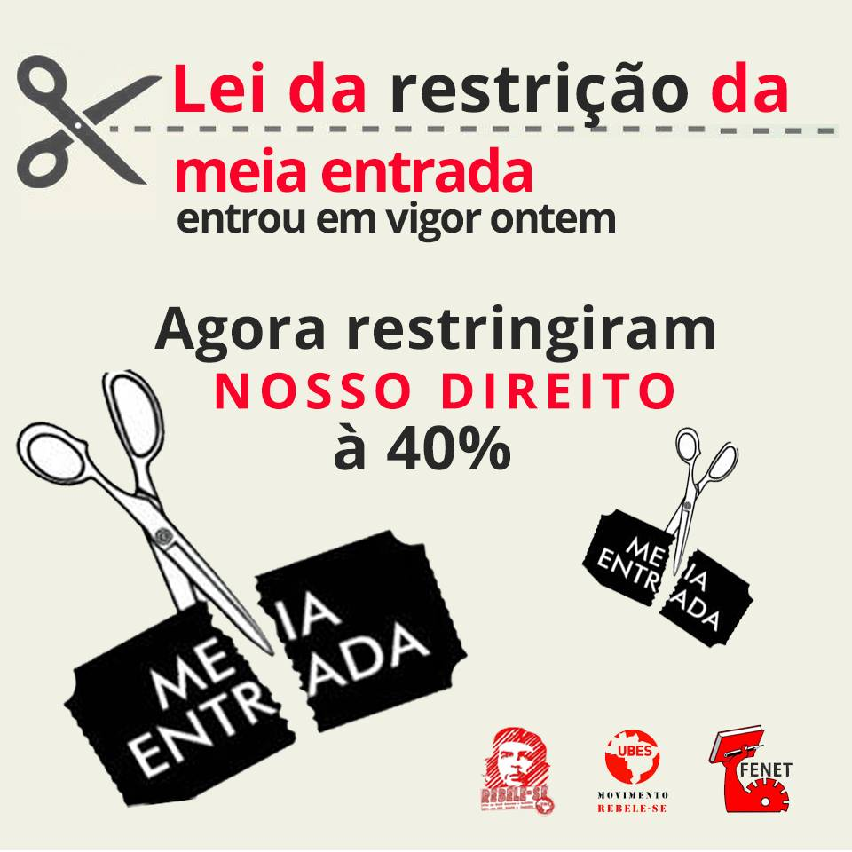

A história se repete
E a história se repete mais uma vez em Teresina: o aumento da tarifa de ônibus em Teresina - PI de R$ 2,50 para R$2,75 . (MÃOS AO ALTO. ESSE AUMENTO É UM ASSALTO ).
E a Associação Municipal dos Estudantes Secundaristas de Teresina - AMES TERESINA juntamente com a Federação Nacional dos Estudantes do Ensino Técnico estavam presentes no ato contra o aumento da passagem, e esse aumento é abusivo e ilegal. Sendo que o valor não equivale ao trecho e a qualidade do transporte, que é horrível. E nada justifica esse aumento absurdo! Não vemos nenhuma nova melhoria alguma nesse sistema de transporte,e além disso as frotas são sucateados e os usuários de ônibus são desrespeitados diariamente e o sistema tem problemas muitos sérios.
Se ficarmos calados e permitirmos mais esse aumento, estaremos legitimando a péssima qualidade do serviço que é fundamental. Vamos mostrar que não aceitamos mais esse aumento, sem auditoria das contas das empresas de ônibus e controle de qualidade pelos cidadãos. Nas redes sociais e na RUA. Vamos Pressionar JÁ!
Sim, novas manifestações devem acontecer ainda contra o aumento das passagens. Porém, é preciso elevar a mobilização. Só uma grande mobilização popular pode garantir ao povo o seu direito de se manifestar como e onde quiser, independente das vontades da PM’s e do governo. E é justamente à juventude, aos grandes contingentes de estudantes que são esmagados cotidianamente dentro do transporte coletivo, a quem cabe o papel de vanguardear esta luta! É preciso mobilizar as escolas, criar comandos de luta contra o aumento localizados nas escolas e nos bairros, para barrar o aumento e seguir avançando, até a conquista da histórica reivindicação dos estudantes de Teresina: O PASSE LIVRE!
RADICALIZAR A LUTRA CONTRA O AUMENTO! INTENSIFICAR A MOBILIZAÇÃO NAS ESCOLAS PELO PASSE LIVRE! OUSAR LUTAR, OUSAR VENCER!
Meia entrada
Sabemos que tanto a carteira estudantil quanto a MEIA ENTRADA ( para ter acesso à cultura e ao lazer) é fruto do movimento estudantil. No entanto os empresários juntamente com a majoritária da UBES tentam acabar com o nosso direito, e em 2013 o congresso aprovou a restrição da meia entrada cultural apenas para 40% do ingressos disponíveis em cada evento. Essa nova legislação é um ataque aos nossos direitos de nós estudantes.
Foi com a luta que conquistamos esse direito, e sera com muita luta que devemos mantê - lo. Não a restrição! Meu direito por inteiro
SÓ A LUTA GARANTIRÁ A MEIA ENTRADA ✊🏼✊🏼✊🏼

REBELE-SE na UBES
A LEI DA RESTRIÇÃO DA MEIA ENTRADA ENTROU EM VIGOR ONTEM
As majoritárias da UNE, UBES e ANPG toparam ficar calados sobre a restrição da meia cultural em troca de controlar a emissão de carteiras no Brasil, tirando esse direito de entidades que não são filiadas a elas. Ou seja, literalmente venderam o direito dos estudantes.
A presidente Dilma Rousseff sancionou a Lei nº 12.852, divulgada como Estatuto da Juventude, onde, no parágrafo 10 do artigo 23, restringe nosso acesso à meia-entrada nos eventos culturais e esportivos
“§ 10. A concessão do benefício da meia-entrada de que trata o caput é limitada a 40% (quarenta por cento) do total de ingressos disponíveis para cada evento”.
Impor o limite de 40% para a oferta de meia-entrada ataca uma conquista histórica da juventude e do movimento estudantil brasileiro
Precisamos defender nosso direito!
Somos totalmente contra a restrição da meia entrada, defendemos uma lei que os estudantes possam escolher as entidades que verdadeiramente os representam e que nenhum direito conquistado seja vendido ou negociado pelo monopólio de carteira.
Convocamos a juventude brasileira a somar-se nessa luta para dizer não a restrição e garantir o direito a meia-entrada ilimitada! Só com luta e mobilização conquistaremos mais direitos!
Textos desenvolvido por Moises Neto Facebook Moises. Fotografias de Facebook AMES.